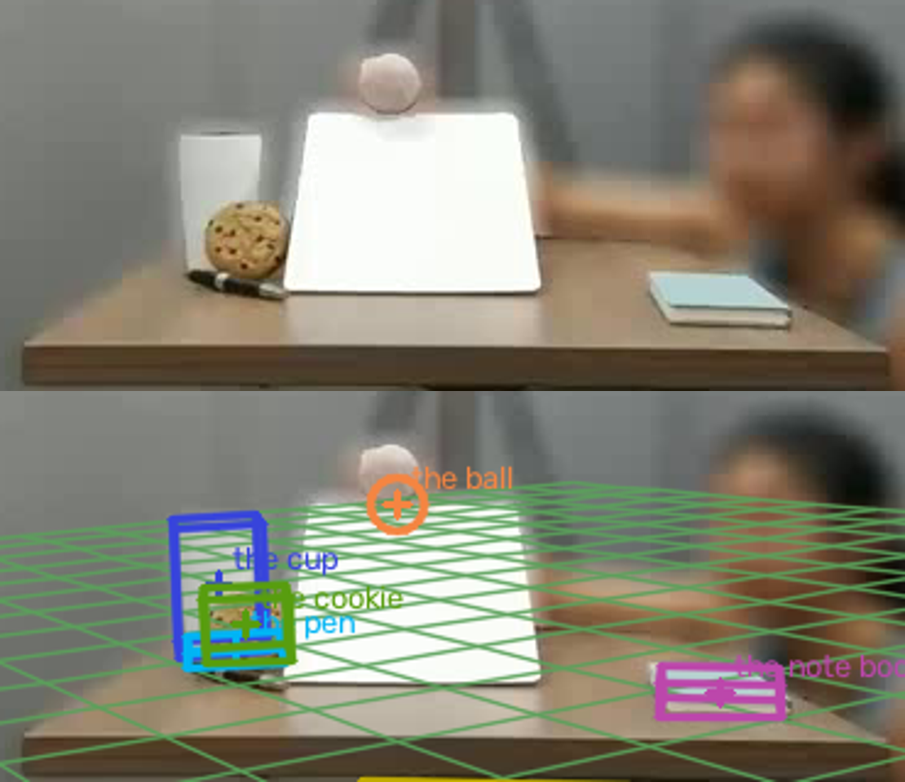
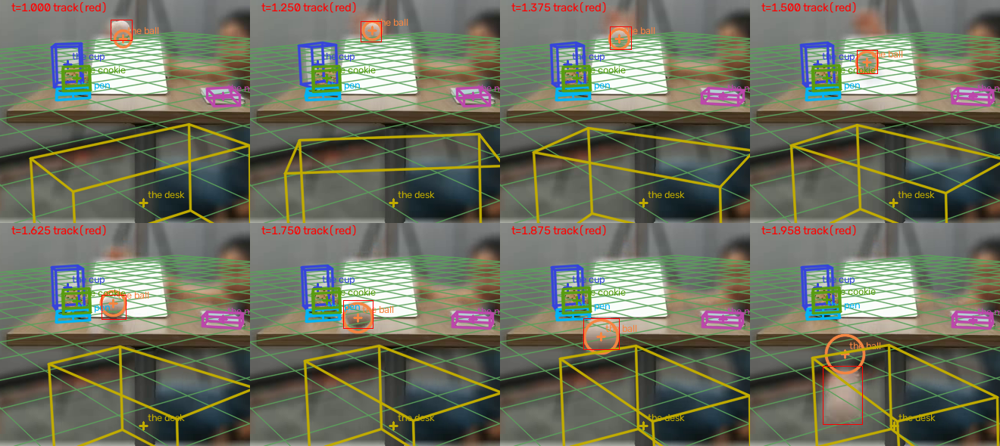

← 视频与问题 · 评估员逐视频报告（由 outputs/eval/*.md 生成）
主因层：拟合/尺度（焦距只来自 lab 先验 650，证据指向约 480–560）+ 拟合模型（球在斜坡上没有斜面段模型）+ 提示/路由（几何速度 conf=1.0 的坏提示被 Qwen 照抄） 根因：(1) f 被 lab 先验按权重 10 钉在 650，四个有锚点的刚体一致偏小 0.67–0.83，lab_prior 却给 conf 0.89 → 路由用拟合值；(2) 斜坡被全画面框跳过，球的斜坡段被当成带弹跳的自由抛体（起动瞬间就有 1.2–1.4 m/s，静止位置被压到桌面平面、比实际低 12 px），而"静止起动 + 先验加速度"给出的 v(1.5)=a·(1.5−t0)≈0.87–1.0 m/s 与画面自洽；(3) 几何速度只算像面横向速度、深度用场景中位数，斜坡运动 ~85% 沿视线 → 32.65（低 3 倍），conf 却是 1.0，三份 Qwen 全部照抄。
captured_0013（验证集，lab，854×480，24 fps，49 帧，D3×8）
逐题来源：outputs/val_mh3_valcur7_routed.csv（valcur7 路由时用的拟合是 c_support_v8e 那一套数值；当前推荐 c_v8g_pfc2_fr 的值单列）。 prior：t=1.5 s 球加速度 3.0 m/s²。depth_info（全部 t=0）：cup 1.210、pen 1.175、cookie 1.182、note_book 0.962、desk_left 0.869、desk_right 0.852、slope_far 1.345、slope_near 1.104 m。
题目表
| 题 | 答案 | 几何 | 拟合 v8e（路由用） | 拟合 pfc2_fr | Qwen(a/b/v9) | 最终 | MRA | 主因层 |
|---|---|---|---|---|---|---|---|---|
| 杯高 cm | 14.5 | 10.61 | 9.83 (conf .89) | 9.65 | 12.5/12.5/12.0 | 9.83 fit | 0.6 | 尺度 f（+ 路由信 lab_prior 尺寸） |
| 笔长 cm | 14.5 | 7.77 | 6.94 (.63) | 7.00 | 14.5 | 6.94 fit | 0.4 | 形状（笔建成竖立圆盘）+ f + 路由 |
| 饼干直径 cm | 8.0 | 6.27 | 6.20 (.87) | 6.19 | 6.9/6.4/6.4 | 6.20 fit | 0.7 | 尺度 f |
| 本子宽 cm | 10.8 | 3.55 | 10.35 (.90) | 7.04 | 13.76 | 10.35 fit | 1.0 | （pfc2 下 L/W/yaw 退化变 7.04） |
| 桌宽 cm | 857.9 | 25.7 | 13.66 (.11) | 13.66 | 61.5 | 61.5 vlm | 0.0 | 真值存疑；另：桌=支撑面未合并、两端锚点未用 |
| 斜坡长 cm | 30.8 | 174.85(截断) | 未拟合 | 未拟合 | 34/25/34 | 34 vlm | 0.8 | 跟踪（斜坡全画面框）+ 两端锚点未用 |
| 球直径 cm | 6.7 | 4.82 | 5.20 (.04) | 5.55 | 5.0 | 5.0 vlm | 0.7 | 尺度 f |
| 球 1.5 s 速度 cm/s | 102.65 | 32.65 (conf 1.0) | 165.7 (.04) | 114.8 (.05) | 32.65×3 | 32.65 vlm | 0.3 | 几何速度方法 + 提示门控；拟合缺斜面段 |
本视频平均 0.5625。
链路逐层
- 解析：8 题解析正确（"velolicty" 也识别为 speed）。depth_info 8 条全部 t=0，
slope_far/near、desk_left/right是端点锚点，目前 3D 拟合只把 cup/pen/cookie/note book 四个当锚点（depth_align.anchors只有 4 个），端点锚点完全没用。 - 物体清单（
outputs/objects/captured_0013.json）：7 个物体。问题： - 笔
shape_hint = cylinder, footprint round, thin—— 笔是细长杆，footprint 不是 round； - desk、slope 角色 structure、track=false，但场景图另外引入了支撑节点
table（desk 就是这张桌子），desk 被当成"放在 floor 上、hang 模式"的另一个盒子。 - 跟踪：杯 [341,242,378,300]、笔 [346,300,388,314]、饼干 [353,272,389,305]、本子 [535,301,594,325]、桌 [278,288,633,480]（底边截断，正确）都对。斜坡：
tracks/tracks_m/tracks_v9p都是全画面框 [5,4,850,428]，tracks_qwen是对的 [386,235,492,311]；tracks_m合并时选了tracks且verified: true（全画面框也通过了校验）。球框 0–1.17 s 静止于 (430,224)，1.21 s 起动，1.5 s 在 (424,266)，1.625–1.667 s 到坡底 (≈296)，1.92 s 起越过桌前沿下落，2.0 s 贴底边。 - 叠加图看：饼干是竖立的（靠在杯旁），笔斜放在饼干前、指向纵深。
- 场景图：按帧图（pfc2）球 on slope 0–1.52、on desk 1.52–1.938、airborne 1.938–2.0，与画面一致（网格图 v3grid 给 airborne 0.42–1.58 是错的）。但"on desk"指向的是 the desk 节点，而其余物体都 on table —— 同一张桌子两个节点。
- 拟合 / 尺度：
- f：
focal_votes只有lab_prior 650 (weight 10)，f_source=lab_prior。gravvote、class ball、stdvote 都没有票（球直径被问，class 票按设计排除；stdvote 未开且这里会给出杯 702、本子 270 这类坏票）。用题里的真值反推只作定位：杯 58 px×1.21/0.145=484，饼干 36×1.182/0.08=532，球 27.5×~1.37/0.067≈560 → 实际 f 约 480–560，lab 先验高 1.2–1.35 倍；四个尺寸题一致偏小（0.67/0.77/0.78），正是这个比例。0061 同为 lab，重力投票 428/448/628，也低于 650 —— lab 相机焦距不是常数（不同拍摄批次可能变焦）。 - 桌面平面 / 相机高度：地平线检测 y=231（17 条线内点），平面 tilt ≈ −1.9°/−6°，物体处平面在相机下方约 0.10 m（杯底 Y=0.103 与平面一致）。用 depth_info 四个桌面锚点 + 两个桌沿锚点做共面检验，f 从 350 到 750 残差只从 10 mm 降到 4.5 mm、相机高度 0.16→0.10 m：相机几乎贴着桌面高度，共面性对 f 没有约束力（不要指望这条路求 f）。叠加图里网格与桌面走向一致，网格地平线落在球的高度，合理。
- 尺寸观测：杯 H=0.0965（observed），比 58 px·Z/f=0.108 还小 ~10%（次要）；笔建成 D=0.070、H=0.010 的竖立圆盘，"length" 取的是圆盘直径 = 框的水平宽度，笔指向纵深的分量完全丢失；饼干 D 观测正确（竖立的饼干框宽≈高）；本子 v8e W=10.35/L=4.85，pfc2 W=7.04/L=4.79 —— 掠射视角下本子足迹的纵深边几乎不可观测，L/W/yaw 退化，两次运行差 30%；桌建成 hang 盒子 L 0.27/W 0.14/H 0.15、rms 71 px、n_anchors=0，叠加图里是桌下一个漂浮且逐帧转向的黄框（
ball_traj_pfc2_fr.png）。 - 球：mode=ballistic，a=(0.33, 9.75, 1.03)（自由落体），events 1.44/1.56 bounce、1.62 land（画面里没有弹跳）。逐帧投影对比（pfc2_fr）：0–1.21 s 静止段投影在 (433,236)，实际 (430,224)，低 12 px（静止位置被放到桌面平面上，实际在斜坡顶上），Z=1.545 而斜坡远端锚点只有 1.345；t_on=1.21 后速度瞬间就是 1.36 m/s，之后恒定 1.15 m/s（kt≈1），1.92–2.0 s 球越过桌沿下落（框 y 362→459），拟合仍在桌面平面延长线上（y 346→372）。v8e 的 t_on=1.33（晚）给 1.66 m/s；pfc2_fr 的 114.8 只是凑巧接近。
- 1.5 s 速度 3 倍差的根因（几何 32.65）：几何流水线 notes："no depth for 'the ball', used scene median 1.14 m；f=170 px implausible, using focal prior 650"。速度 = 像面速度 × 1.14/650，局部窗口 ±0.25 s 跨过起动和坡底转折，像面速度只量到 ~186 px/s（逐帧差分 1.46–1.54 s 约 310–370 px/s）。用两端锚点算斜坡方向：(−0.02, 0.46~0.55, −0.84~−0.89)，倾角 27–33°，运动 85% 沿视线，像面只看到竖直分量。两项相乘 ≈ 1/3。
- 自洽检验（不用答案）：斜坡长由两端锚点 + 坡顶/坡底像素反投影 = 0.278（f=650）~0.300（f=500）m，对 f 不敏感；起动 t0≈1.17–1.21 s（框中心开始下移）；先验 a=3.0（≈ g·sin30°·5/7 = 3.5，滚动球合理）。到坡底时间 t0+√(2·0.30/3)=1.62–1.66 s，画面坡底到达 1.625–1.667 s ✓。由此 v(1.5)=a·(1.5−t0)=0.87–0.99 m/s（MRA 0.8–0.9），不依赖 f。
- 提示与路由：D3 尺寸题按拟合 conf≥0.6 用拟合值（lab_prior 尺寸 conf 0.63–0.90）；杯/笔上 Qwen 更好（0.8/1.0 vs 0.6/0.4），本子上拟合更好（1.0 vs 0.7）。速度题拟合 conf 0.04–0.05 → 用 Qwen，但 Qwen 三次都照抄几何提示 32.65（几何 conf=1.0 "direct"）。
- 真值存疑：桌宽 857.9 cm。桌子 355 px 宽、两端锚点 0.869/0.852 m：f=450–650 时左右端点距离 0.45–0.62 m；即使理解为 85.79 cm 也需要 f≈350，与杯/饼干/球给出的 480–560 不符。8.58 m 的桌子在 0.86 m 处只占 355 px 物理上不可能。不改逻辑迎合。
叠加图（scratchpad）
captured_0013/zoom_t0.png
（上：原帧放大，饼干竖立、笔被饼干半遮、斜坡是白板；下：pfc2_fr 叠加）captured_0013/ball_traj_pfc2_fr.png
（8 个时刻，红框=跟踪，橙圈=拟合球；1.0 s 低 12 px，1.958 s 拟合球悬在桌沿外）- /tmp/claude-1017/-data-yumenghe-QuantiPhy/823507c7-069c-4584-aec0-69d0a1b126a7/scratchpad/eval_0013/grid_c_v8g_pfc2_fr.png、grid_c_support_v8e.png（1.0–1.8 s 六帧）
- 单帧：同目录 c_v8g_pfc2_fr_t*.png、c_support_v8e_t*.png、raw_t0.00.png、raw_t1.50.png


逐条问题（按影响面排序）
- 斜坡/桌面类"两端锚点"没有直接用来量长度 —— 斜坡长 0.8（Qwen 碰的），桌宽 0（真值存疑）。
- 根因层：拟合（端点锚点只在 in_progress 里作"绑定父物体端点"，没有直接求长度）+ 跟踪（斜坡全画面框导致 slope 被跳过）。
- 影响：测试集 19 个视频 ~57 题的被问物体带端点锚点，其中斜坡/桌子家族 captured_0001/0002/0013(s,x)/0014(s,x)/0023(s,x)/0024(s,x) 约 32 题（slope length/width、table/desk length/width）。注意命名变体
slope_far_end、slope_near_tower、无时刻锚点（0023/0024）。 - 建议：被问 length/width 的物体有一对
X_{far,near}/{left,right}/{top,bottom}锚点时，在物体框（或父物体框）上取对应端点像素（far/near → 框沿视线方向的上下沿中点；left/right → 左右沿中点在框底行），P = r·normalize(u−cx, v−cy, f)，长度 = ‖P_a − P_b‖。纵深方向的长度对 f 几乎不敏感（本例 f 450→650 只变 0.312→0.278），应给高 conf；横向（left/right）对 f 敏感，conf 跟 f_source 走。question 的轴与锚点对不一致（问 width、锚点是 far/near）时不用。负责：qp-code-3d（scene_fit 端点长度），qp-tools（parse 端点名变体、全画面框在 merge/trackcheck 里判失败：框面积 >90% 画面 → 选候选里的非全画面框，本例 tracks_qwen 就是对的）。 - 验收：本视频斜坡长不用答案得到 0.28–0.31 m；全画面框不再
verified: true。
- 球在斜坡上没有"斜面段"运动模型；速度题可以不依赖 f —— 1.5 s 速度 0.3。
- 根因层：拟合模型（ballistic 把滚下斜坡拟成自由抛体 + 假弹跳；静止段压到主支撑面；没有坡底→桌面→桌沿下落的分段；已知 in_progress 有 phases 但未进默认，pfc 下 phases 给 75.3）。
- 影响：测试集上面同一家族的 ball/book 斜坡视频（0001/0002/0013/0014/0023/0024 及其 s/x 变体）里 "velocity at t"、"velocity at the end of the slope"、"displacement" 共 ~25 题。
- 建议：场景图给出物体 on 某个非主支撑的结构（slope/ramp）区间 [t_s, t_e] 时，建一个斜面段：斜面平面/直线由该结构的两端锚点（或 tracks 里的结构框 + 主平面）给出，物体沿斜线做匀加速，起点静止于 t0（t0 用框中心位移变点检测，不用场景图手持结束），加速度取 prior（prior 时刻落在本段内时），否则 g·sinθ·k；段末接主支撑上的滚动段，越过支撑边界（桌沿 = desk/table 端点锚点或桌框前沿）后进入抛体段。问询时刻在斜面段内时，v = a·(t − t0) 直接作答，与 f 无关。自检：段末时刻 t0+√(2L/a) 应与画面到坡底时刻一致（本例 1.62–1.66 vs 1.625–1.667）。负责：qp-code-3d。
- 验收：本视频静止段投影误差 <3 px（现在 12 px）；t0 在 1.17–1.21；v(1.5) 落在 0.85–1.15 m/s（不看答案、只看自洽检验）；1.92 s 后投影跟上下落框。
- 几何速度提示 conf=1.0，但它只量像面横向速度 + 场景中位深度 —— 32.65 被三份 Qwen 照抄。
- 根因层：几何 solve/置信度 + 提示门控。
- 影响：所有 D3 速度题里物体无自身锚点或运动沿视线的情况（0034as 两颗网球 4 题现在 0.5–0.7、0027s、0041x）；测试集斜坡家族全部速度题。
- 建议：几何速度 conf 乘以三项惩罚：物体无自身深度锚点（用了场景中位深度）、f 走了 implausible→fallback、窗口内框尺寸变化 >15%（沿视线运动，像面速度只是下界）；任一项成立 conf ≤0.3，
vlm_hint不把它作提示（"宁可不给提示"原则）。窗口不要跨过起动变点（起动前帧不进拟合）。负责：qp-tools（vlm_hint 门控、route）；几何 solve 的窗口/变点归几何流水线所有者（建议 qp-tools 统一）。 - 验收：本题不再给 32.65 提示；验证集 D3 速度题整体不降。
- 焦距只靠 lab 先验（权重 10），lab 相机焦距并非常数 —— 杯/饼干/球直径一致偏小 0.67–0.83，影响 4 题（0.6/0.4/0.7/0.7）。
- 根因层：尺度。已在修（in_progress【0041x】"焦距投票不再只靠 lab 先验"），本例补充证据：0013 物体反推 480–560，0061 重力票 428–628，注释里静态先验场景 580/604/737 —— 至少 ±15–20%，与
F_CONF["lab_prior"]=0.9不相称。 - 建议（增补）：f_source=lab_prior 且没有任何实测票时，尺寸题 conf 上限压到路由阈值以下（让 S3/D3 回到 Qwen 或几何平均），或与 Qwen 取几何平均；不要靠 stdvote（本例杯 702、本子 270 都是坏票）。同一场景的兄弟变体（s/x）共享 f。负责：qp-code-3d（conf），qp-tools（route）。
- 验收：验证集 lab 视频尺寸题 MRA 不降；本视频杯/笔走 Qwen 时 +0.2/+0.6、本子 −0.3。
- 细长物体（笔）建成竖立圆盘，length 取的是圆盘直径 —— 笔长 0.4。
- 根因层：物体清单 shape_hint（pen footprint round）+ 拟合形状。
- 影响：pen/pencil/stick/ruler 类 length 题，测试集 captured_0014(s,x) 笔长、0034as pencil bag 类。
- 建议：objects 对 pen/pencil/rod 类给
shape=rod, footprint=elongated；scene_fit 对 on 支撑面的 rod，轴线放在支撑平面上，两端点由掩码长轴端点反投影到平面求长度；端点被其他物体框遮挡时标 occluded、conf ≤0.3（本例笔左端在饼干下）。负责：qp-tools（清单）、qp-code-3d（rod 形状）。
- 桌子既是被问物体又是支撑面，却成了两个节点（the desk on floor + support table）。
- 根因层：清单/场景图。in_progress 有相近条目（0009：清单已有 ground 类节点时默认边指向它），本例是同类：被问的 structure（desk/table）就是被提及物体所放的支撑面时，支撑节点应复用它（同义词 desk/table）。
- 影响：本视频桌宽、测试集 0023/0024 table width/length 6 题。
- 建议：scenegraph 生成支撑节点前，用同义词表查清单里的 structure，命中则
support = 该节点；scene_fit 对作为主支撑的结构不做 hang 盒子拟合，尺寸由主平面上的端点锚点（问题 1）或桌面边界线给出。负责：qp-tools。
- 掠射视角下平放盒子的足迹纵深边不可观测，L/W/yaw 两次运行差 30%（本子 10.35 → 7.04）。
- 根因层：拟合（相机高度 ~0.1 m、距离 ~1 m，仰角约 6°）。
- 建议：仰角 <10° 时平放物体的纵深边标 unobservable（conf ≤0.3），yaw 固定为与像面对齐，被问的边若是横向边只用横向像素宽。负责：qp-code-3d。验收：pfc2 与 v8e 下本子 W 一致。
- （次要）杯 H 拟合 0.0965，比框高 58 px·Z/f=0.108 小 ~10%，rms 0.69 px 却认为匹配；建议 qp-code-3d 查一下圆柱投影里锚点 Z 用中心还是前表面。
真值存疑
- 桌宽 857.9 cm：见第 7 层。几何上 0.45–0.62 m；85.79 cm 也对不上。